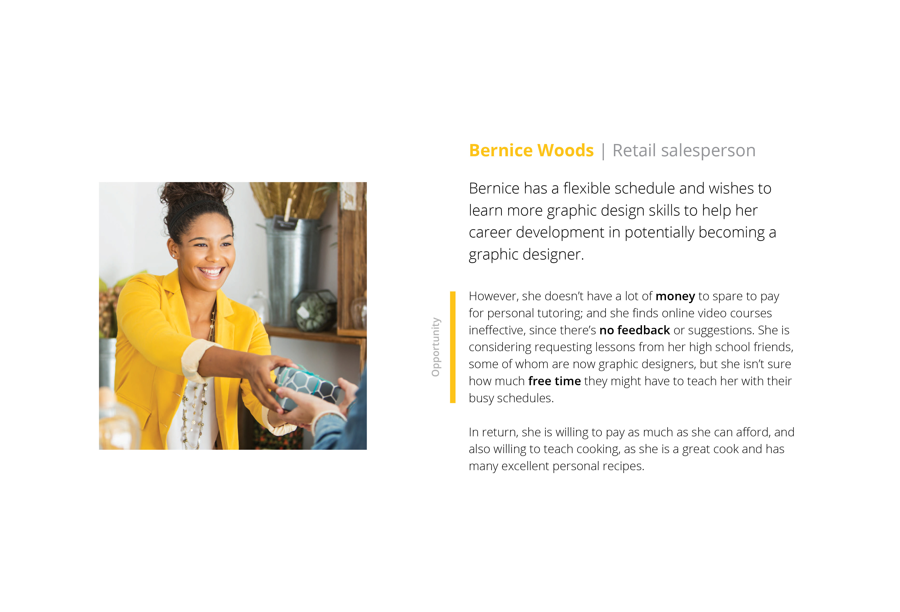
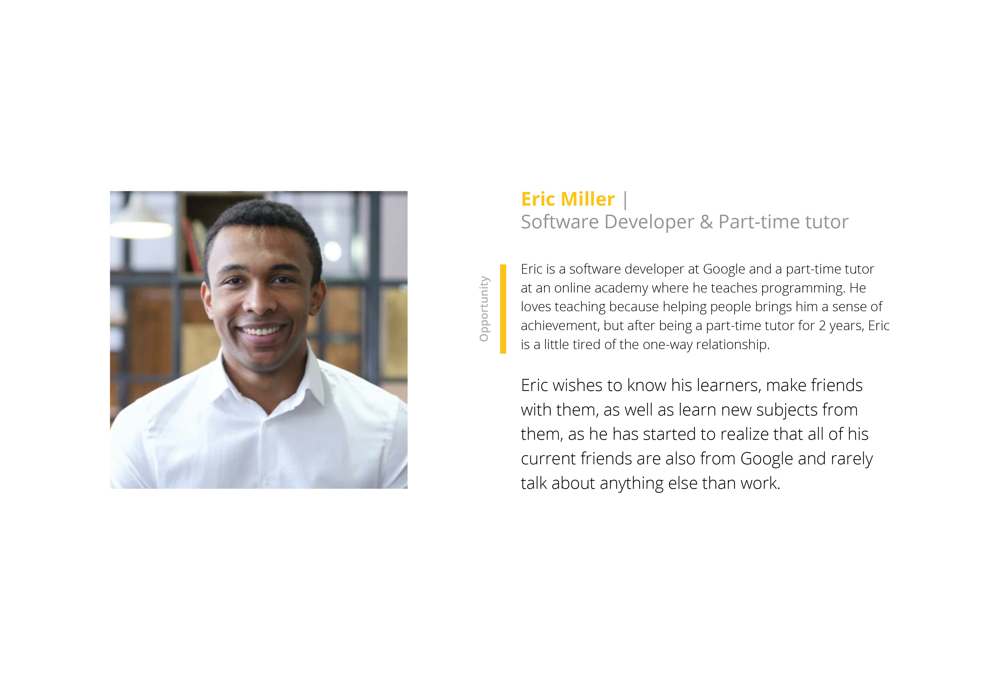
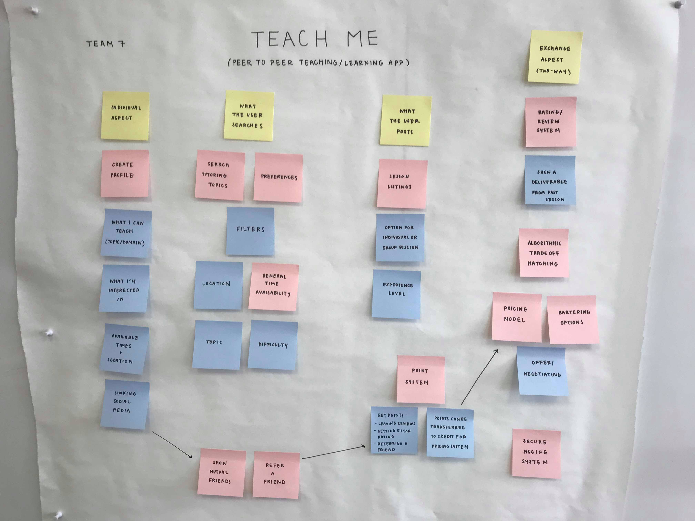
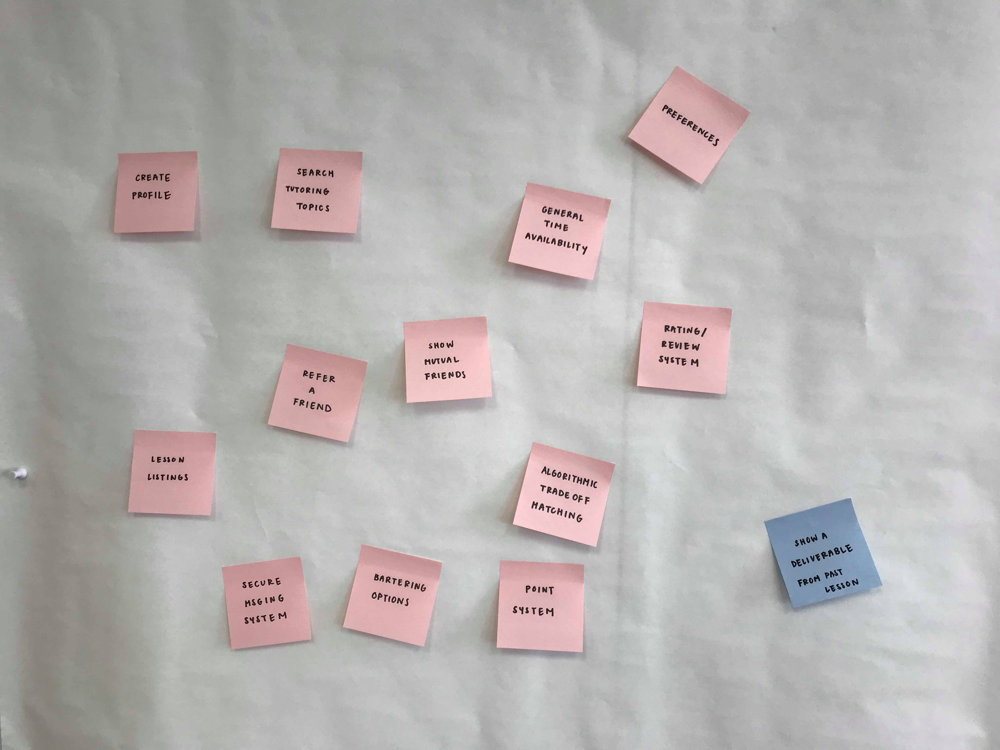
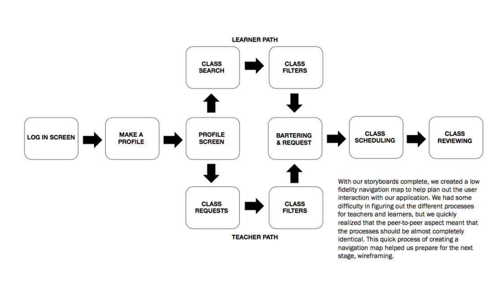
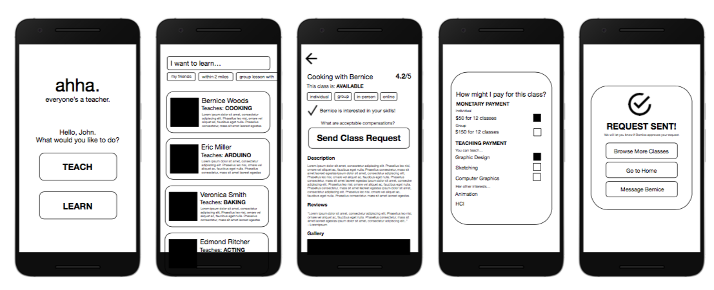
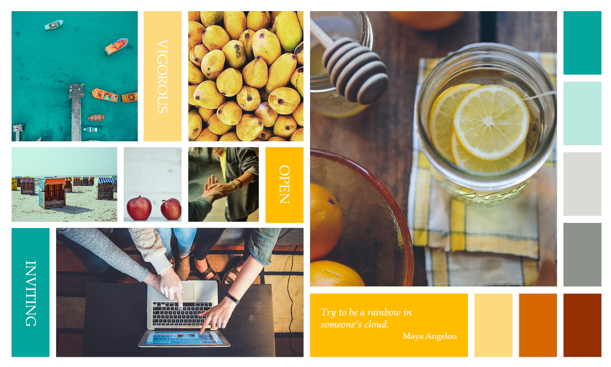
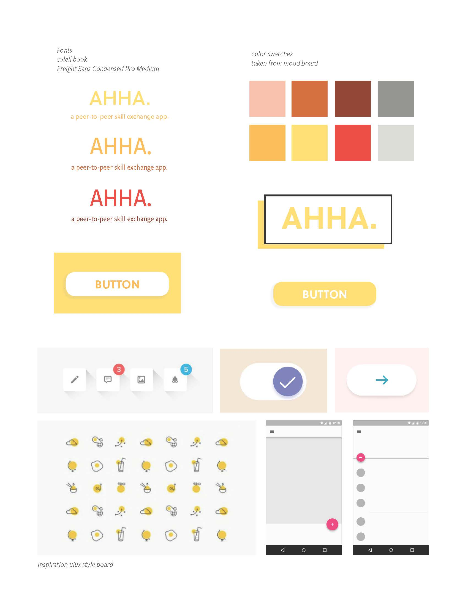
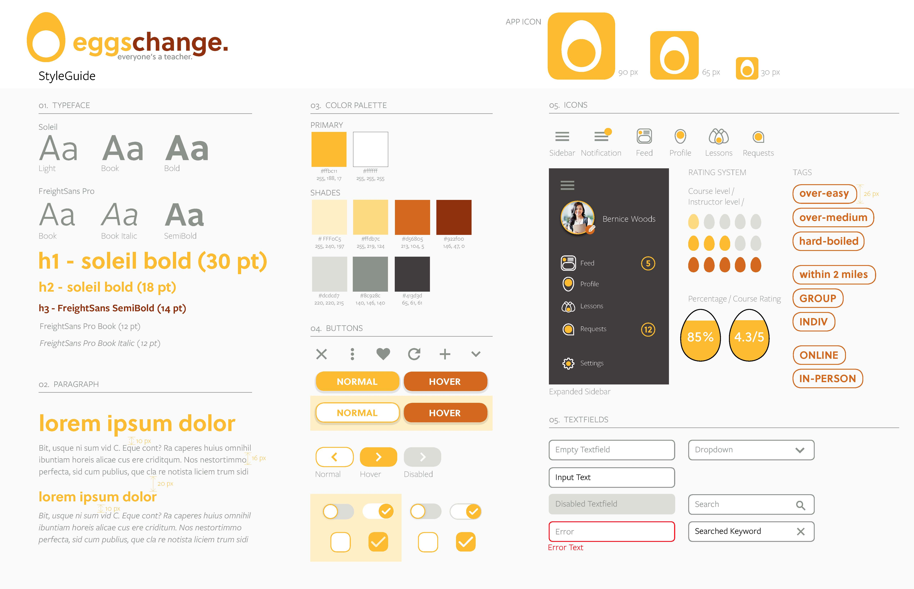

Eggschange
Spring 2018
A Peer to Peer Learning Platform
Team:
Joyce, Samson, Sarika, Katie
Eggschange is a peer-to-peer learning app that allows users to teach or take lessons from other users in exchange for money or lessons. By giving an alternate method of “payment,” via giving lessons, we wanted to promote a safe and encouraging educational platform that
would allow people of all backgrounds and financial statuses to learn or teach. As a group of four we conducted various user tests, scenario developments, user journey maps to develop personas and storyboards to help in the development of a peer-to-peer teaching app.


Clickable Prototype
Research Process
Brief & Context
This assignment was a second part to a previous project in which we were assigned different prompts and had to conduct primary research. Each group from that project switched their research packets with another group which would take over based on the stakeholders, assumptions, constraints, and goals written by the previous group. For our group, the domain was “Teach me something.”
Research Process
Data Analysis & Key Takeaways
From the research packet given to us, I took on the role of breaking down all the interviews done by the previous group and analyzed what trends, areas of overlap and key points there were:
Easier to teach/learn from someone who is not a stranger because trust is already established
Willing to learn from someone they don’t know as long as that person is knowledgeable
Incentives for teaching:
Social favor to mutual friends
Paying it forward
Meeting new people
Helping like-minded people or people with similar paths
Incentives for learning:
Personal improvement
Quality time with friend
Get to know friend/acquaintance better
Strengthen social bonds/social status
Design Process
Goal
Creating a UI that establishes trust between users to connect people who want to learn with those who want to teach, with flexible “payment” options.
Design Process
Persona Generation
After familiarizing ourselves with the data, we moved into creating two different personas as example users for the app so we could empathize with the user and better understand what goals and feelings they would have while using the app:
 Design Process
Developing User Flows
From the personas, we first wrote down each possible feature we could think of including in the app:
We then organized the post-it notes into categories and specified which type of user (teacher or learner) would go through what flow:
Problem
Scenarios & Storyboards
Each member of our team then tackled one “how might we” question through a storyboard and scenario now that we had a clearer idea of what features our app would have. Below is my storyboard:
Katie: Focus on the bartering/exchange system in the app
Scenario:
1. Bernice, a retail salesperson, has been trying to learn about graphic design but cannot afford to pay for professional classes. However, she is quite a talented cook and would be willing to teach cooking instead of necessarily a full class payment.
2. Using TeachMe, Bernice is able to enter what classes she wants to take (graphic design) and what classes she can teach (cooking) and finds a good match, Sarah.
3. Since Sarah is teaching a seven class graphic design program but Bernice’s cooking class is only four classes, Sarah and Bernice use TeachMe to barter such that Bernice teaches Sarah and only pays $50, well within Bernice’s budget.
4. Using TeachMe, Bernice is able to finally begin to explore her interests and not go over her budget.
How Might We:
How might we facilitate bartering as a technique for class payment?
My other team members focused on these aspects of the user experience:
Samson: Focus on the scheduling part of the app
How Might We: How might we make it easier for people to schedule classes into a busy schedule?
Joyce: Focus on finding the right difficulty level part of the app
How Might We: How might we enable users to find classes of varying difficulty?
Sarika: Focus on the review and evaluation part of the app
How Might We: How might we better rate and review classes in teaching apps?
Lo-fi & User Flow
I started our initial concept generation for the look of the app with paper sketches. We then went into developing the navigation flow and digital lo-fi sketches.
 Stylesheets and Mood boards
We then developed the general visual mood of the app, and certain specific design elements we wanted to include in the screen designs.
Mood Board:
We want our app to allow users to learn and teach in a more relaxed and flexible manner.
 After our first stylesheet, we ended up coming up with a new, more thoughtful name and concept for the app: eggschange, which is a play on exchange. Below is the revamped stylesheet:
